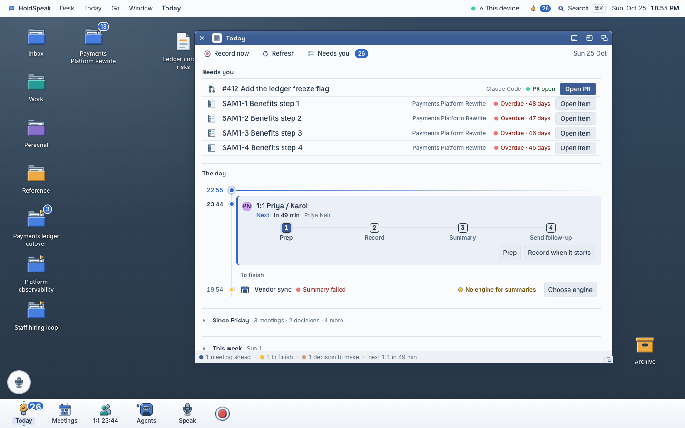

Dock directions
You asked why the bottom bar is ugly. These are the causes:
- It is a Windows taskbar. A full-width near-white paper band, 60 px high, on a dark slate floor. The tiles are left-aligned at one 84 px pitch, with a 12 px word under each icon.
- The parts do not match. The count badge sits over the picture. The red Record ring is a different object from the other tiles.
- The icons are too small for their family. The D icons are exported at 32 px. At 32 px on white, the bevel is gone and each icon is a small literal object: a light bulb with an M, a calendar with two heads, two coloured people, a robot in a blue box. Mixed fills and shapes at that size look like emoji, whatever the family.
Below are three directions on the real 1440 desk, at real pixel size. Each uses the D icons at 48 px (where D keeps its 2 px bevel) and a symbol set I drew (one ink, 2 px stroke, 24 px grid). Use the switch on each direction to compare objects and symbols. The Talk orb and the Archive icon are not drawn: a parallel lane removes them.

1. Floating dock Recommended
A centred plate 10 px above the bottom edge, in the floor's slate glass. Radius 14 px, 48 px icons, height 64 px. No words: the name shows on hover as a small label above the tile (Meetings is shown hovered). A 4 px dot under a running app. The count badge on the icon's top right corner. Record is one tile of the same size. A thin rule before the seated windows.
Cost. The tile pins hold (test_dock_glass.py `_whole_dock_target`: every tile at least 44 × 44 and inside the dock), but the swipe and `.desk-dock-more` pager probes (test_dock_glass.py:311, test_desk_sweep.py:772) assume a full-width band, so the plate keeps `overflow-x: auto` with the phone cap it already has (dock.css:51). `--desk-snap-bottom` goes from 60 to about 82 px so snapped windows clear the plate, and the 1:1 time word under People moves into the hover label and the badge.
2× zoom, the dock alone
Phone, 393 px
2. Shelf
The full-width band stays, but in the floor's slate: dark, with a light rule on top. Icons 40 px, words kept in paper ink at 12 px, the tiles centred as a group, the badge on the corner.
Cost. The cheapest change: the plate and shine tokens (tokens.css:369–370), icons 32 → 40 and `justify-content: center` in dock.css; every geometry pin and the swipe probes hold. `--desk-snap-bottom` goes from 60 to 64 px. It is still a taskbar, only a dark one.
2× zoom, the centre of the dock
Phone, 393 px
3. NeXT column
A vertical dock on the right edge in the NeXT and Workbench manner: 56 px tiles, 48 px icons, no words, the Record tile at the bottom, the menu bar unchanged. A dot on the left edge marks a running app.
Cost. The largest change: the work band loses its bottom reserve and gets a right one, so `--desk-snap-bottom`, windowGeometry.ts and its workBand test, and every snap rule in desk.css and pullout.css change. The horizontal swipe and pager probes become vertical. On a phone the column takes 56 of 393 px, so the phone needs its own bottom row.